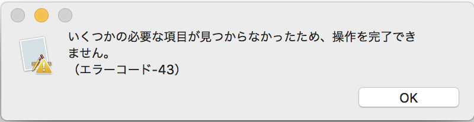

$Date: 2018-07-07 06:49:13 +0900 (2018/07/07 (土)) $
$Revision: 1347 $
dmg ファイルのインストーラでアプリをインストールしようとしたときのエラー
いくつかの必要な項目がみつからなかったため、操作を完了できません。(エラーコード -43)
cmake のインストーラでインストールしようとしたときに以下のエラーが出ました。

解決方法
- 再起動します。
- command キーを押しながら R キーを押し続けます。
- ディスクユーティリティを選びます。
- 自動的にディスクエラーが修正されます。
- 再起動します。